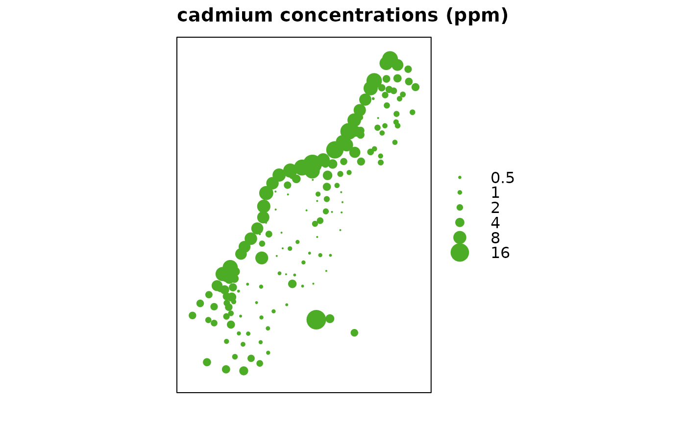
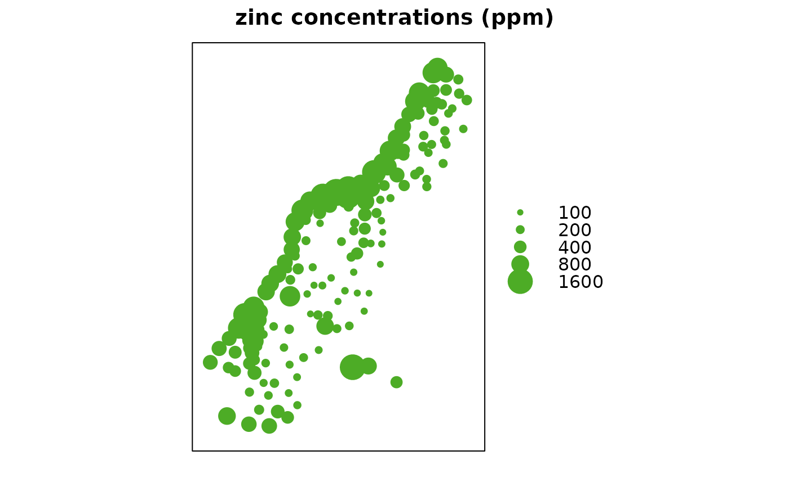

bubble.RdCreate a bubble plot of spatial data, with options for bicolour residual plots (xyplot wrapper)
bubble(obj, zcol = 1, ..., fill = TRUE, maxsize = 3, do.sqrt = TRUE, pch,
col = c("#d01c8b", "#4dac26"), key.entries = quantile(data[,zcol]), main,
identify = FALSE, labels = row.names(data.frame(obj)), key.space = "right",
scales = list(draw = FALSE), xlab = NULL, ylab = NULL, panel = panel.bubble,
sp.layout = NULL,
xlim = bbexpand(bbox(obj)[1,], 0.04),
ylim = bbexpand(bbox(obj)[2,], 0.04))object of, or extending, class SpatialPointsDataFrame or SpatialGridDataFrame, see coordinates or SpatialPointsDataFrame; the object knows about its spatial coordinates
z-variable column name, or column number after removing spatial coordinates from x@data: 1 refers to the first non-coordinate column
logical; if TRUE, filled circles are plotted (pch = 16), else open circles (pch = 1); the pch argument overrides this
cex value for largest circle
logical; if TRUE the plotting symbol area (sqrt(diameter)) is proportional to the value of the z-variable; if FALSE, the symbol size (diameter) is proportional to the z-variable
plotting character
colours to be used; numeric vector of size two: first value is for negative values, second for positive values. Default colors: 5-class PiYG from colorbrewer.org.
the values that will be plotted in the key; by default the five quantiles min, q.25, median q.75, max
main plotting title
logical; if true, regular plot is called instead of
xyplot, and followed by a call to identify().
labels argument passed to plot if identify
is TRUE
arguments, passed to xyplot, or plot if
identification is required.
location of the key
scales argument as passed to xyplot
x-axis label
y-axis label
panel function used
possible layout items; see spplot
x axis limit
y axis limit
returns (or plots) the bubble plot; if identify is TRUE, returns
the indexes (row numbers) of identified points.
data(meuse)
coordinates(meuse) <- c("x", "y") # promote to SpatialPointsDataFrame
bubble(meuse, "cadmium", maxsize = 2.5, main = "cadmium concentrations (ppm)",
key.entries = 2^(-1:4))

bubble(meuse, "zinc", main = "zinc concentrations (ppm)",
key.entries = 100 * 2^(0:4))
